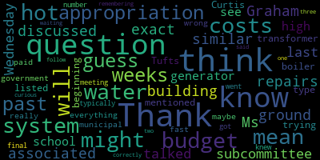

AI-generated transcript of June 1, 2021 Final Budget Hearing
English | español | português | 中国人 | kreyol ayisyen | tiếng việt | ខ្មែរ | русский | عربي | 한국인
Back to all transcripts
[Lungo-Koehn]: 2020 order suspending certain provisions of the Open Meeting Law, Chapter 30A, Section 18, and the Governor's March 15, 2020 order imposing strict limitations on the number of people that may gather in one place. This meeting of the Medford School Committee will be conducted via remote participation to the greatest extent possible. specific information in the general guidelines for remote participation by members of the public and or parties with a right and a requirement to attend this meeting can be found on the city of Medford website at www.medfordma.org. For this meeting, members of the public who wish to listen or watch the meeting may do so by accessing the meeting link contained herein. No in-person attendance of members of the public will be permitted, but every effort will be made to ensure that the public can adequately access the proceedings in real time via technological means. In the event that we are unable to do so, despite best efforts, we will post in the City of Medford and Medford Community Media websites an audio or video recording, transcript or other comprehensive record of proceedings as soon as possible after the meeting. The meeting can be viewed through Medford Community Media on Comcast channel 22 or Verizon 43 at 7 p.m. You can call in by using phone number 1-929-205-6099. Please enter meeting ID 968-8468-0306 when prompted. Additionally, questions or comments can be submitted during the meeting by emailing medfordsc at medford.k12.ma.us. Those submitting must include the following information, your first and last name, Your Medford Street address, your question or comment. The agenda will be as follows. Pursuant to Mass General Law, Chapter 71, Section 38N of the Medford School Committee will convene a public hearing for members of the community interested in speaking either for or against in whole or in part, the superintendent's recommended fiscal year 2022 operating budget. The school administration will present an overview of the recommendations brought forth to the Medford School Committee through the previous five Committee of the Whole meetings that took place on May 3rd, May 6th, May 13th, May 18th, May 19th, in the formulation of the district's proposal of a budget request. Signed Dr. Marice Edouard-Vincent, superintendent of schools. Member McLaughlin, if you could please call the roll.
[McLaughlin]: Yes. Member Graham. Here. Member Kreatz. Here. Member McLaughlin, here. Member Mustone.
[Edouard-Vincent]: Here.
[McLaughlin]: Member Ruseau.
[Lungo-Koehn]: Here. You see a member of the group, just unmute yourself, please. Present.
[McLaughlin]: Mayor Longo Karn.
[Lungo-Koehn]: Present, seven present, zero absent. We all may rise to salute the flag.
[Mustone]: I pledge allegiance to the flag of the United States of America, and to the Republic for which it stands, one nation, under God, indivisible, with liberty and justice for all.
[Lungo-Koehn]: Thank you. I'm not sure who's going to get us started, but I'll turn it over to Dr. Marice Edouard-Vincent, Mr. Murphy, to get us started.
[Edouard-Vincent]: Good evening, everyone. I'm pleased to report that this is our eighth meeting on the budget process. And as you know, Mr. Murphy, who's going to, you know, explain the steps that were taken, but I really feel like this year it has really been an opportunity for us to really look at the budget through another lens. And so I would like to thank Mr. Murphy, Michelle Kingdon, and the team that have worked really hard in putting this presentation together. And I look forward to the questions and conversations that we're going to have today. So without much further ado, Mr. Murphy, please begin your presentation. Thank you.
[Murphy]: Thank you, Dr. Edouard-Vincent, and I'll just echo the thanks particularly from Ms. Kingdon for all of her support and help, as well as all the principals, department heads, and other administrators who assisted in developing the budgetary proposals that have been brought before you over the course of the last month. Mayor, with your permission, I'm going to bring up a deck that should be very familiar to everyone by now. as I know large portions of it, you've seen several times. So in light of the fact that this is the eighth time in which you've been presented with this information with hopefully some new and refined information in each go round, I am going to go at a relatively brief pace, understanding that as is always the case in the budget process, we have members of the community who are jumping on the train at various stops And in order to provide appropriate context, I will reiterate certain points that we have discussed throughout all of our committee of the whole meetings. And we'll be more than happy to answer questions from the committee. And given that this is a public hearing, respond to comments from the public to the extent that there are some related to both the process and to the priorities that have been presented before you. So this is our overall budget process. You've seen this flowchart many, many times now. I thank Ms. McLaughlin in particular for the suggestion of ensuring that the timeline was a piece of the information that we reiterated time and time again. And slight change now in this next slide, as we've now moved, you've received the superintendent's recommendations. And now we're at this final section of the flowchart in which tonight we will ask that you take a vote to send to the municipal government a budget request, and we'll talk a little bit about, in a moment, the distinction between adopting the budget and making the request that you as the governing body of the school system are empowered to make. So, from very early in the budget process, we've talked about the various lanes of funding that go into developing the school district's budget. our 70 allocation that comes from the state, our local contribution that comes from the municipal government generated primarily through property taxes from the people of Medford. We have our external funds that come in year in and year out. And that's a particularly important lane in the COVID era in that the federal government has provided to school systems a significant amount of funding that is earmarked specifically for districts with the intention, as we've echoed at the local level many times over, the importance of attempting to provide the remedial support necessary to support our students in the wake of an unprecedented instructional disruption. And as we discuss the budget priorities, as we have discussed the budget priorities over the course of the last month, we've returned to that theme over and over again of making sure that we are funding priorities and building goals to make sure that our students' educational careers are not defined by this instructional disruption. Now, on April 26th, I think, on or about April 26th, we presented to you our initial projections. And what we said at the time, you'll remember, is that we were estimating about a $2 million, $2.1 million increase in fixed costs. So those are the costs that are attributable decisions that far predate the FY22 budget. They are contractual in nature. They are oftentimes compliance-based. And those are the costs that we know before the school committee or the administration make any strategic decisions related to our students' needs in FY22, the 21-22 school year, those are costs that we know we're going to incur. And as we discussed over the last several weeks, it became clear throughout the budget process that primarily due to some increases in special education tuition and transportation costs, that that number was actually going to go up to closer to $3 million. Which, again, you've heard me say several times, special education budgeting is a roller coaster of sorts. It's very fluid. It's always very fluid. It's fluid, frankly, throughout the fiscal year. The $1 million variation is not particularly unusual at any point, even in the development of the budget before it's adopted. What buffers that, what insulates us from the total impact is there's a significant amount of external funding that comes in through Circuit Breaker or IDEA grant to help defray that. So we are not going to see, of the 3.1, it's about $2 million. That comes from special education. We're not going to see a $2 million increase effect at the local level, because we're going to have that external funding that's going to offset that to some degree. But we also have fluidity, as I said, throughout the fiscal year, meaning that that it could go up and therefore we have to plan based on those projections. And that's why that number is where it is. So there's also been some fluctuation in the numbers since we presented on May 19th, the final committee of the whole, as was relayed to the communication that came with the budget to the school committee. and it's been available on the school district website now for several days, that as we, the process we call scrubbing the budget, going through and looking at each line to determine, is there a more appropriate place to put a particular budgetary priority? From that, we were able to reduce by north of a million dollars, primarily by when we presented with our department heads and principals in order to provide an authentic representation of the school district's needs. There were a number of budgetary priorities that ultimately when we looked at them with a closer lens and really scrutinized them, we saw them as belonging on the capital side of the budget process. So that's not a reduction to suggest we are not going to do the things that were represented by the information presented to you throughout the committee of the whole meetings. It's just that some of them we think, it varies. There's additional grant funding that we've learned about last week. that may come through our E-rate process. So that could assist in the building out some of our technology infrastructure. We have some other capital funding available that we think we're going to be able to address things like generators and hot water heaters. And we've had some good conversations with some folks in the city administration about various funding sources for some of that work. And so all of the information that was presented to you, to the best of my knowledge, was accurate. Uh, it does, uh, detail what it is that we are expecting and hoping to do. And ultimately the recommendation before you tonight, um, does land within that 3.1 to $5.8 million range that we had projected on, on April 26th. So with regard to the total numbers, we'll talk a little bit about in a second, the highlights, um, the operating budget, not including external funds for FY21 is $62.3 million. That includes that $1 million supplement that the district received when the Chapter 70 funding was released in late August. Ultimately, the critical recommendations, that's the first column in each of the budget narratives that were presented to you over the course of the last month in all of those Committee of the Whole meetings, is $67.2 million. Uh, the recommendation tonight for a request to the municipal government is the $68.2 million, which is reflective of the committee's endorsements of, uh, the, the priorities presented to you during the budgeting process. So this is the point in which I have to say, as you've heard me say many times, the school administration has, uh, concurrent responsibilities. One of our responsibilities is to assess the district's needs in an authentic manner and present that information to you as the governing body of the school system. And we believe that the authentic needs of the district in terms of what would be a sound prudent investment that would benefit the students of Medford is $68.2 million, thereabouts. At the same time, our second concurrent responsibility Is to plan to operate the district with whatever appropriation is ultimately made. And that's what the $67.2 million represents. And that's why we discussed at the very beginning of this process, a range from 3.1 to $5.8 million. We know that when we make this request to the municipal government, the municipal government, the mayor, the city council, all of the other municipal officers. who I would say incidentally have been cooperative partners and there's been, I think, excellent dialogue between our school administration and our counterparts at City Hall throughout this process. We know that there is a broader context in which that appropriation is being made and we will be prepared to operate the district effectively to benefit students regardless of what the appropriation is. Again, we have a responsibility to be straightforward and transparent and candid with the community about the importance of this investment. And that's how we have attempted to fulfill those two dual responsibilities, both to be prepared for whatever contingencies there may be, and also to be transparent and straightforward with the school committee and the community at large as to what the needs of the district are. Now, I would also say that the other variable involved in this budgeting process is that we know that the federal funding that is available is going to position us to pursue several of those priorities for which there is a strong nexus between the need and the impact of the pandemic. And certainly that having that essentially a federal backstop to that is important. But as we've discussed, understanding that the ESSER funds are one-time funds and when possible should not be used for reoccurring expenses, you know, that positions us in a place where we don't want to be creating the types of structural deficits that we know are unsustainable at our current pace. I would say that, and I know there's been a lot of discussion about this, so I just want to be candid about the fact that I'm not suggesting that this investment, as sizable as it is, represents a revolutionary or fundamental change in investment on the part of the community and public education. That's not what this is. What it is is an attempt to be honest and sincere about the needs and the priorities of the district in a way that will do right by students within realistic parameters and without being shy about what the needs of the district are. And so that is not always the easiest needle to thread when presenting this information, but over the course of this process, That's what we've attempted to do. And again, understanding that after you make this request to the municipal government, and the municipal government ultimately makes an appropriation, we will then present to the school committee a revised budget that will either look identical to the one that you see tonight, represent where necessary a scaling back of certain investments, or theoretically, expanding upon those investments. And when we do that, we will also have a clearer sense as to what the ESSER budget will look like. Just some highlights here in terms of the things that this budget would position the district to do. Again, you've heard about these over the course of the last month in the several meetings that we've held, and all of that information is available on the district website and for members of the community who have not had the opportunity to go back and see, well, I don't know that, I would say, and I thank, and I both thank and commend the committee for the extent to which each of these committee of the whole meetings have been run in a very timely and efficient manner. Almost all of them have landed pretty much at the two hour mark. And so for those looking for 10 hours of, I think, fairly interesting, insightful, and candid discussion about the budget of the Medford Public Schools, I think those are, That's what you're looking to spend 10 hours to doing this is as good of a way to do it as any other 10 hour allotment that I'm aware of. And these bullets here with regard to intensive literacy and math support expanded after school and extended school programming investment. And all key and targeted staffing support and investments, all of those are represented in the presentations. that we made and that were endorsed by the committee. And so with that, this represents the end of my presentation for the moment. And I say that because, again, you've heard a lot from myself and other members of the team over the course of the last month. As I said in my memo to the school committee, we are grateful to the committee and to the members of the community who have allowed us and given us this audience to present this information. We do believe that this represents an authentic assessment of the needs of the Medford public schools. And we look forward to taking your questions and working with the municipal government to continue this budget process over the course of the next several weeks. Thank you.
[Lungo-Koehn]: Thank you, Mr. Murphy. I know we were all hand delivered our budget book over 145 pages on Friday. And we did spend several meetings, like Mr. Murphy said, discussing the budget. But are there any further comments or questions or any questions from the community we can answer? Member Ruseau?
[Ruseau]: Thank you, Mayor. I'm just trying to be 100% clear that our request. If, if that was the allocation that the mayor actually gives us in her budget that that will be the line item in her budget, not a different number with understanding that funds are coming from s or other places.
[Murphy]: Well, our recommendation is for the request to the municipal government to be for $68.2 million. If the municipal government were to appropriate less than that, then when we present to you again on this, it would present a proposed budget reflective of the appropriation that was made. And in addition to that, we would present a proposed budget to use the ESSER funds for. As we've talked about, and this is, I appreciate their question, Mr. Russo, because it's an opportunity to say again that there are sort of two schools of thought when it comes to ESSER. One is that the ESSER funds are there and should provide relief to municipal governments because that's the money that can go to schools and they need not essentially, it doesn't need to be considered a supplement. The other school of thought is that the, The schools, I'm using schools very broadly now, really nationwide, not just in Medford or Massachusetts, but that school districts have incurred disproportionate expenses because of the effects of the pandemic and the instructional disruption that we discussed, and that therefore ESSER should essentially be walled off and should be used only to support those additional expenses and challenges caused by the pandemic. And the point that we've discussed several times is that it is impossible to completely separate the two. There have been increased costs on schools. And that's why there is additional federal funding available to address all of the municipal government's needs. And to say that ESSER should be the only money that goes to schools would completely discount the fact that we've incurred greater expenses in many ways and have greater challenges than almost any other entity in society, nevermind municipal government. At the same time, it is impossible to completely wall off a set of budgetary priorities and say, well, those are COVID-related expenses. The social-emotional supports that our students are in greater need of now were and will be needs even when the pandemic is a distant memory. And therefore, we have to acknowledge that these things are intertwined to some degree. And I think what we've tried to do is We're presenting the operating budget proposals first. Whatever is appropriated, we will use the operating budget to support. And we know there are some specific pieces that either because the nexus is so tight and strong with the COVID impact, or because as a contingency plan, in the event that the appropriation is less than what the request is by the school committee, then we know that that's how those two things will be separate. But again, that's why we've generally outlined the things that we have a pretty good sense are gonna go to the ESSER budget, and then others that we prefer operating budget, but we will present that information and ultimately propose to the school committee based on the appropriation that is made.
[Ruseau]: Thank you. And then I have lots of questions, but I have sort of a specific question. about transportation, the budget shows it going up 50,000 or 56,000, which I assume is actually the increase that the contract requires each year. It shows us going up to 18 buses. We're currently at 17. We're gonna be able to cut that down to 16 to give us the two bus buffer to accomplish the transportation for the high school. But I don't see any money related to actually doing that. Where's that money?
[Murphy]: Sure. So the $56,000 is the fixed cost increase. So that is at least the increase in cost for FY22. I can't speak to that. It could be a slight variation in any given fiscal year, but the FY22 increase is $56,000. And you're correct that as we discussed, I believe it was on May 19th, It may be the case that by repurposing some buses and taking a closer look at the bus routes, at least based on our initial consultations with the bus vendor, and just as a reminder, this was a contract that was extended in the spring of 2020. So we're completing year one of a three-year contract. They believe there's at least one bus that can be repurposed and therefore we can expand the free transportation yellow bus capacity at the high school. The school committee has directed the administration to establish the transportation program such that no students will have to pay to get the transportation that they're entitled to. We are in the process now, we've had one initial meeting with the bus vendor in which this was discussed and there's plans to meet on an ongoing basis over the course of the next month and potentially slightly longer than that. We're in the process of accumulating the data we need to determine what is the most prudent strategy to expand that transportation option. You're correct that it is not in this current budget proposal because we don't have the data to say with specificity, how many buses we would need to accomplish the goal established by the committee in that vote. And my concern is that we have a partner, one that we work well with in the Eastern bus. They are under contract. we have notified them that we very well may want to expand our yellow bus capacity in the next fiscal year. Putting them on notice of that and communicating to them is frankly as comfortable as I am. That is what I am most comfortable doing at the moment, because if we do anything else of a more official variety, to suggest that we are definitely going to need additional buses. Once we look at the data, it may be the case that we only need one more. And by repurposing the buses we have, we can accomplish that. But if we do anything else to indicate that we intend to expand that capacity, I am somewhat concerned that the vendor could then rely on that representation to procure the infrastructure that they need to fulfill that intention. And then if it turns out that either because the data we collect, and the data includes where students live and what high school students are expressing as their intention, and for anyone who has met a high school student before, on occasion, their intentions change, as do their preferred methods of transportation. If that were to happen, we could be in a situation in which we've made a sizable investment in transportation without any actual benefit being realized by students. And so it may be the case that by the time we present a budget to you to adopt, we have data that we think is reliable. And we might say at that point, okay, you know, we want to shift this around. We want to use this funding for this at the time, for the time being to increase from one to two or one to three or what have you. But right now we have a mandate from the school committee, which is very clear. And I think, frankly, makes a lot of sense and seems to be a big step forward in terms of transportation equity. But we don't have enough data to actually say, let's spend this amount of money on it, which is why right now we're only going with the fixed cost increase. I know that's a long explanation. It's a very good question. You're not the only person who's asked it. I'm glad that you are asking it. But we're going to need more time to figure out exactly what we need to do to comply with that directive.
[Ruseau]: Thank you.
[Lungo-Koehn]: Member Graham, then Member Kreatz, and then I think I saw Member Van der Kloot's hand up.
[Graham]: Thank you, Mayor. I just wanna make sure I'm clear that anything listed in the tables with a TBD next to it is not something we can expect to see at the beginning of the next school year. Is that? under this budget, under the $68,221,865.
[Murphy]: So I don't think I would necessarily say that that's true. It's probably true in the TBDs that I can think of. Certainly the TBDs that were in a column that say long-term priority, I think that's probably true. There is and there always will be a lot of fluidity within a $68.2 million budget. And so it is certainly possible that if the municipal government were to appropriate $68.2 million, given the types of movement that you always see during a budget and savings that is just sort of naturally realized during the course of the year, it's totally possible that something could materialize and something that currently has TBD next to it could become something that we're able to do and certainly keep the committee informed of that. But most likely the TBD ones are, again, the most smart, they're long-term priorities that were presented to the school committee because we, at the committee's direction, wanted to present as authentic and comprehensive a collection of priorities and goals as possible. So if there's a specific example or examples, I'd be happy to speak to that, and I might be able to get into more specificity as to the sort of likelihood But for the most part, if it's listed at TBD, it's more likely that it's long-term. And we're trying to collect more data to determine whether it is both necessary and possible. I think actually, as I was saying, the bus is a great example of that, that we know what the S, we know what it would be, but the variable is not the cost per bus. We know that's in the $75,000 to $80,000 range. The question is, how many would we actually need? So that's a variable that at the moment, it's very possible that it could happen. We just don't have enough data information at this point to say that it will.
[Graham]: Okay. And there was about $852,605.20 outlined as infrastructure requirements. Are they part of the $68 million ask to the municipal government? Yeah, for the most part, no.
[Murphy]: But I will say that, you know, there will be times where if things are, depending on the urgency of something that has to happen, it's conceivable that they could overcome that. But that would be something we would bring back to the school committee. We wouldn't, if it's something that really should be a capital expense, it's certainly our hope that we would keep it on the capital side of the ledger. So I think specifically, there's some, Technology infrastructure related to archiving and network security. There are some subscriptions related to our access points and making sure that they're properly renewed in a timely manner. That piece, which is about 75 or $100,000, that's something that could theoretically be considered essentially an annual maintenance or semi-annual maintenance. And that could be. but by and large of the $850,000, anything beyond the points that I just made technology-wise, and then all the heavy infrastructure that we discussed in the Buildings and Grounds presentation, generators at the high school, security cameras at various schools, Chris, tough spoiler, those are things that we intend to put out, request for proposals, and to utilize the existing capital budget to support.
[Graham]: And also in the building and ground budget, there was $240,000 listed for restroom, rehab, Medford High main entrance, a truck and plowing equipment and renovation of the Karen Theater.
[Murphy]: All capital, not in the 68.2.
[Graham]: Not in the 68.2. Correct. And when will we be talking about the capital budget?
[Murphy]: Well, as soon as we get done talking about this budget, it would be my guess. Hopefully within the next, I would, hopefully very soon. The, I would just say there's, there is $153,000 increase in the buildings and grounds. I believe it's in contracted services, but it might be the blind below contracted services with the idea being that the maintenance that is required to maintain upkeep of the improved HVAC systems will have added costs. And that's what that 153,000 is attributable to that.
[Graham]: OK, and then on the elementary school side of the budget, the language in each was building-based literacy and math coaching positions under long-term budget priorities.
[Murphy]: You are correct and I appreciate the attention to that detail. So that is included in the 68.2 and it's an exception to the rule related to keeping long-term priorities out of the FY22 budget. The reason for that, and I really genuinely appreciate Ms. Graham raising this point because it's an opportunity to illustrate what I meant by ultimately we are planning for the contingencies necessary based on whatever appropriation we're giving. The school committee communicated to us at one of the latter committee of the whole meetings, at least to some extent, their hope that some of the previous long-term priorities would be incorporated into this budget proposal. I think the sentiment from that was very, very clear, even though ultimately the endorsement of the budget proposals that were being made, I would say, includes the endorsement of something designated as a long-term priority. because it fit within that projected range, we did include that in this proposal. But I will also say that the administration I think has been very clear and candid about where our priorities are and what we are essentially currently structured to utilize and to capitalize on best. And so if the appropriation is less than the request, I would expect that the coaching positions are not going to be included in the recommendation that comes before you for the budget adoption. And we talked about why that was in the May 18th committee of the whole, but just essentially it is that while we think ultimately literacy and math coaches would be an excellent investment and it will help build up our capacity and will improve instruction for students, going from our current zero to eight as outlined here is not something that we think, frankly, we have the capacity to do to the standards that we would need to. And therefore, now, could it be the case that we do fund one position and start to build out our train-the-train models and build out our capacity to prepare for eventual additional investment? Yes, I think that is possible, but I do not anticipate that those would be high priorities based on the contingency planning that we're doing. So if you're out there and you're thinking about applying to be a math or literacy coach, I would say probably rethink that at least for the time being.
[Graham]: Thank you for clarifying that. And I also wanna clarify that we're sticking with half of a librarian for four elementary schools for the upcoming year. as the desired number.
[Murphy]: The library staff, the library staffing allocation is currently embedded within the instructional technology department. And I believe it was referenced in the memo that there's still some clarification that we need to, we need to iron a few of those details out. I don't anticipate that we would make a significant increase in the recommendation related to library staffing. However, I think that there are some short-term staffing needs due to the expanded technology that is going to need to go into that umbrella department. I have, and this is, I think that both administrators, Mr. Heron and Ms. Laden, who presented to you, is not at all a reflection on them, but the structure of those departments, I think, is leading to some challenges. One of the ways that manifests itself is that because those departments are structured the way that they are, there's staff that should be focused on libraries that are having to address technology-based issues. And that is never, it's not a good practice, generally speaking. So it may be the case that we use some ESSER funding to have some temporary support on the technology side to free up some capacity on the library side. I think that's one of the ways that we're going to address some of the challenge that we're seeing. It is not, and we talked about at the beginning, this being a significant and healthy investment, but not necessarily representing the type of fundamental change that has been discussed in various forms. I am not suggesting that our temporary technology support that frees up some library staff represents the type of fundamental change that some may advocate for. I don't think that that would be represented, but I do think it would improve the situation in terms of just having more support in the libraries. So if that sounds like a convoluted answer to a very simple question, I would say that I agree with that. It's just that there's some more untangling that has to happen And again, I don't expect us to recommend a significant increase in the library staffing. I do expect we'll be able to improve the situation. And there may be some change by way of a slight increase in investment when the numbers play out over the course of the next several weeks before we come before you with a recommendation for a budget to adopt. It's a messy one. I'm not trying to talk in circles. It's just that that is a particular difficult one that we're trying to fix.
[Lungo-Koehn]: Thank you. Thank you, Member Graham. Member Kreatz, and then I believe Member Van der Kloot, Member McLaughlin, and then Member Ruseau.
[Kreatz]: Thank you. So my question might be similar to Ms. Graham's question. I had a very, I mean, I think it might be the same exact question. So I had a question. How will the costs associated with some of the repairs that we discussed in the building and ground subcommittee last Wednesday, you know, we talked about the generator at the high school, the hot water system. I see the transformer is listed in this budget and the Curtis Tufts hot water system or boiler. I think you mentioned at the beginning, I was just trying to type everything down really fast. How will those costs be paid?
[Murphy]: So potentially, there's a few different sources, but they're all in the capital budget line. So there's approximately $815,000 line item that's been appropriated to the schools and about $160,000 line item that was appropriated from a previous project. Those, the ones that you specifically just mentioned, I would anticipate RFPs being issued, and then the administration coming before the committee to request authorization to spend down from those capital funds to address those urgent capital needs. And that's specific to the generator, the boiler, and there's a third one that's not the hot water heater. that I would have to get back to, and I'd have to get back to you at a later date on the third one. But the hot water heater, we're in active discussions right now in the hope of not having to utilize those funds for that. And that's the same for the restroom project and the front entrance as well.
[Kreatz]: Thank you. And when do you think we'll get the appropriation from the municipal government? I guess in the past, And maybe I'm wrong, but I think in the past, we typically had the appropriation, like when we went into the final budget meeting, like we knew what we got for a number, but I could be just not remembering it correctly.
[Murphy]: No, you are. All right, I can answer that.
[Lungo-Koehn]: Just meeting with consultants today for the first time, CLA, they're gonna be helping the city, and we still have interim guidance on ARPA. So that guidance isn't final, therefore there's no final numbers, but we're still working through it. So you're right, membercrats, usually the city would give a number, we'd have that number already outlined. trying to do is do everything I can to make this a reality for our students and faculty.
[Kreatz]: Thank you.
[Murphy]: And I would just say again that our from just from a finance perspective that our communication with the city's finance team is continuous and collaborative and you know really it's not uncommon for the person in my job and the person the city CFO job to not always have the most collaborative conversations, that just has not been the case. I appreciate that and I'm grateful for that. But at the same time, the sort of shift in the process that the committee asked us to employ and what we've done over the course of the last month, and this is really important, particularly for members of the community that may have watched this process play out year in and year out, is that we've tried to build a proposal that is authentic to the needs of the district. And so rather than build a budget that just drives toward a predetermined number, we have assessed the full needs. That's why it's such a big number. And we're making this recommendation so that the school committee can fulfill its responsibility to make the request. The municipal government has responsibilities that are inclusive of the schools, but certainly also effect the community in its entirety. And we understand that we're a constituent part of that community, which is why, again, we concurrently are preparing to operate the district based on whatever appropriation is made. But we have to be transparent and honest with regard to what our needs are, which is why we presented this publicly. It is, it's the case that every other municipal department does not present their needs in a public forum. That is the That is what is unique about a school department. But again, if we're not going to build a proposal that it's authentic to the needs of the school district, as you heard me say on April 26, I don't know what the point of the school committee is. And so you have to make that request. The municipal government has to take that request and then balance that against the needs of the city in its entirety. And then we will address, we will operate the district with whatever appropriation is made.
[Kreatz]: Thanks. And I said one follow up. So do you think it would be two weeks, three weeks, like where, you know, I'm just curious, like, I mean, you know, we don't know. So I guess we'll just be waiting.
[Murphy]: Yeah, I mean, well, we have plenty to do in the meantime. So we've got to, we'll build out in addition to those contingencies, build out the the ESSER which will include obviously priorities and work that we'll be doing over the course of the summer and some of those pieces that we know that there's such a strong nexus between the impact of the pandemic. So it won't be after June 30th, I know that. That's certainly a backstop to that. I also would say that once there is a clarity as to what the municipal government is expected to appropriate, we wouldn't necessarily have to wait until like June 29th to bring it before you. we could present it to you based on what we know is being recommended and, you know, and then along with the ESSER number. And so we've sort of penciled in the week of June 21st, I think, if that's a Monday, somewhere in that week, could be toward the end of that week, but, you know, that's probably where we would end up landing, but the worst case scenario would be the following week.
[Kreatz]: Thank you.
[Lungo-Koehn]: Thank you, Member Kreatz, Member Van der Kloot, Member McLaughlin, Rousseau.
[Van der Kloot]: So, Mr. Murphy, you and I spent considerable time today discussing the issue that my colleague brought up at the top of this meeting with the transportation for the high school students. And really what we come down to, if I'm clear on it, is that no final decision has been made except that you are working towards the fact that the school committee wants to provide transportation. One thing I thought about after our discussion was whether students would still be able to buy bus passes if they were so inclined.
[Murphy]: It's up to the committee what you want to be available here, but I certainly would strongly recommend that we leave that option available to students, in part because, as we discussed, there are students that are using the MBTA pass for part-time jobs or for I imagine internships, or frankly, just to get around town and to see their friends. And so I think the discounted pass is a benefit that we wouldn't want to deprive them of, even if we are taking steps to ensure that they're not dependent upon it to get to school.
[Van der Kloot]: Thank you. And just to follow up, during the course of the discussion, I expressed great concern that the Eastern bus projection that we would be able to go down a bus was a terrific surprise to me. Now, it is true that we have less students currently than we did. It is unclear exactly how many students will be returning to us. But that is, I just, I think that we need to keep what our budgeting generous in this area because I believe, I just know from the past that all of a sudden we have requests from the woodwork and it's very, very difficult to take back something that you've given before. So that's a concern. On the bright side, I do wanna mention that there were so many things in this budget which are positives. For instance, I'll just pick a small one. In the world languages, we are going to introduce French in the sixth grade level and textbooks for that have been provided for. There's also textbooks in the science area, and I didn't go through all of them, but I don't want members of the public to think that there aren't, in fact, major upgrades in many, many areas. On the other hand, there are some areas which I am a little concerned about. I'm gonna go back to my fine arts where earlier I had asked many questions about this area. I had been advocating strongly for a supervisor, a director position of fine arts. After a discussion with the superintendent, it's clear that she's not yet ready to move on this. And while I understand that in some ways, in other ways, I still feel that the area is so critical in that social emotional well-being of life area. So we aren't doing that right now, but I've certainly made it clear that my concerns in the future. We'll be watching that very carefully. However, given that that isn't happening, I was a little surprised not to see some of the smaller requests increase inventory of instruments, including ukuleles. I had asked about the number of violins, being that we're going to be starting both potentially two grade levels. And some of those things I don't see funded. So I wanted to ask about that. And I also wanted to question, I assume that some of the other things that we talked about for science, I mean, excuse me, for summer enrichment programs are under the TBD sort because that's gonna come from ESSER funding?
[Murphy]: That's correct, yes.
[Van der Kloot]: Okay, could you go back and talk about the smaller bylines and fine arts at them?
[Murphy]: Yeah. Good question. And I think that the reason that they're not specifically identified in particular lines at the moment is that we need a little more time to identify exactly what the investment would be and what the budgetary impact would be. I think that it is very possible that because of the relatively small nature of that investment. But again, not having determined how many ukuleles we need to buy, I can't say exactly how small it is, but it's not something that is going to be so sizable that we won't be able to absorb it within the general fluidity of the budget. And so to change that would be difficult because there could be 50 other things of a similar magnitude that we can't anticipate right now. But I would definitely say, I would definitely not say that because, and I'm using ukuleles, not in any way to make light of ukuleles, just because I think it's a good illustration and it's one that we can all remember. If we are going to determine that our increased, say our extended school day initiatives focusing on the arts are going to require an additional 25 ukuleles, that investment is something that, one, we will in all likelihood be able to absorb as a result of the fluidity of the budget and funds that are realized in the early part of the fiscal year. In addition to that, because it is an attempt to provide a specific type of remedial support to students because the priority is sort of coming to the head of the front of the list because of the disruption that students have had, particularly by way of musical instruction over the course of the last two years, it's very likely, I think, that that would ultimately be absorbed by the ESSER budget. And so both because the size of it is such that there could be many other things that it wouldn't make sense to include the ukuleles, but not things that cost the same amount as the ukuleles, and because the ukuleles are likely to have a strong nexus with the initiatives that we're undertaking in order to build back from COVID, that would be the only reason that it would not be included. There certainly should not be an inference that those smaller investments will not be made.
[Van der Kloot]: I see there is a line item restoration of supplies and transportation lines to provide for resumption of normal event participation post pandemic. So I assume that one perhaps is about transportation for the band. So that one is in. I guess one of the things is when I talk about and you mentioned ukuleles, but there's also part of my real concern was the violin and the orchestra program, that while they're small numbers, and I certainly understand you can say, yes, they'll be covered in the course, that there were some of these that are, you know, really germane to the enjoyment of students. And I think that enjoyment and going to school is, you know, a very important piece of it. So that's why I mentioned them, kind of like the chocolate chips and the pancake.
[Murphy]: Yeah, no, I think you're absolutely right. And I think that it's an important illustration that I think in presenting the $68 million worth of stuff, it's something that isn't specifically called out, but it's something that I think the committee is very right to be concerned about. And I think that we have heard that priority and have begun the necessary discussions to make sure that we're able to address that. But in a world where we can't say with enough specificity exactly what we want to do with it, that's the only reason it's not specifically called on. But I think we can certainly make sure that it is highlighted when we present the additional information related to either the ESSER budget or the vote to adopt, depending on where the appropriation lands.
[Van der Kloot]: Now, one last, just building on a previous issue, It does under, for example, in the mathematics department, it does set aside 35K in, it says, for a week-long, four-hour-a-day math academy, which we had spoken about, certainly, in the curriculum subcommittee. It says COVID mitigation priority, so I'm assuming, again, that means ESSER funds?
[Murphy]: Yes.
[Van der Kloot]: Okay.
[Murphy]: And there's that. So I mentioned I mentioned to the committee in the memo that the 68.2 represented the number that we landed at through a certain number of rounds of scrubbing the budget subsequent to May 19th, but prior to May 28th, when you received, or May 27th, I guess, when you received the budget book and the explanatory documentation. From that, in between, in that window of time, there was, we identified one or two items that were essentially double counted, which is why I said in my communication to you that if you were to request 68.1, that could also be an accurate reflection of the needs that we've identified. Since I identified the 68.1, I can tell you that we further identified about, Let me just get this number exactly right here. I believe it was 110,000 of something that theoretically could be included in the operating budget, but likely would ultimately land in ESSER, which is why ultimately our recommendation is still 68.2, because that amount of movement is just inevitable given the numbers that we're talking about. We've spelled out for you line by line how the 68.2, I'll say, would be spent. But it is inevitable that even if the exact number that we are recommending that you request were to be appropriated, there would be some movement within that. And so I think that's just an example of that.
[Van der Kloot]: OK, thank you. And thanks for all the work you've done on the budget, as well as Michelle and the rest of the team.
[Murphy]: Thank you.
[Lungo-Koehn]: Thank you, Member Van der Kloot, Member McLaughlin, and then Member Rossell, and we have a resident that would like to speak.
[McLaughlin]: Thank you. Thank you, Mr. Murphy and everyone else for putting all this work together, much appreciated. Regarding the special education outside costs, circuit breaker and external funding that offsets the money that we were talking about, when does that get sort of backed out so that we can see what those numbers actually are? And where does the money go that was allocated towards special education?
[Murphy]: So a good question. I mean, in some cases it goes towards special education because the costs can increase throughout the course of the fiscal year. As I know the committee is familiar that the district assumes responsibility for students enrolling up until April 1st of the fiscal year. And so that's why we say it's a roller coaster because the external funds come in that can help offset some of those costs, but the costs can go up and sometimes can exceed the extent to which their stroke funds have come in. So we can't really necessarily rely on those funds for anything, at least for a large portion of the fiscal year. In times when that money is freed up, there has to be a look at what the rest of the needs are across the district. So I couldn't necessarily say, it's kind of like, if you want to check back on April 2nd, 2022, I'll have a better sense at that point of knowing sort of exactly where we are with regard to that. With regard to the numbers, those can fluctuate a little bit, but by the conclusion of the summer, we should have estimated projections, which I know, I think as we've discussed in previous years, it's been somewhere between a million and $1.5 million have come in. And so while we've seen an enrollment decline and some of that external funding has declined over the course of the last several fiscal years, it's generally stayed within that range of a million to 1.5. And we would anticipate that before the beginning of the school year to have a better sense as to what we should expect.
[McLaughlin]: So thank you. So is there a reconciliation process? So is there a process at which point we see what there actually was an IDEA funding and what there actually was in Circuit Breaker and sort of how that was applied and what the reconciliation of those numbers are?
[Murphy]: Yeah, I mean, whether there's a standing process in Medford, I actually, frankly, I can't necessarily speak to, but certainly I think it would be prudent to establish a quarterly process. And I think over the course of this year, I think I presented several times on this information, but I think I would, I would think it would be a very good practice to sort of build into our school committee calendar, essentially a quarterly update with regard to funds coming in in projections for the remainder of the fiscal year. I think it's probably worked out that way over the course of the last year, but I think it would probably be a good idea for us to establish that as a timeline over the course of the coming fiscal year. And I think that would fulfill that.
[McLaughlin]: Yeah, I think a reconciliation process would be great to be able to understand where that money actually goes. And then I'm assuming one-to-one aids for individuals with IEPs are under the paraprofessional allocation for special education. Is that right?
[Murphy]: Yes. In the proposed budget, There's a significant amount of investment in paraprofessional staffing, and that is reflective of two things. One, it relates to the increased, or the new substantially separate program that is envisioned for the Roberts School, and there are paraprofessional staffing needs associated with that. There's also an investment, and frankly, The magnitude of the investment will be determined ultimately by the size of the appropriation. But I think, as we discussed at the elementary and middle school presentations, the need for building-based paraprofessionals to not be connected with specific special education programming, but to be available at various grade levels for students who are in inclusive settings, but require additional classroom-based support. Those are two of the examples of paraprofessional staffing investment that's represented in this budget. The one-to-one paraprofessional support, and frankly, I can't say off the top of my head exactly how many would be represented, but generally speaking, it would be considered part of the fixed cost increases because those are situations in which students have an IEP that requires a one-to-one paraprofessional, and so we know that regardless of any strategic decisions that are made in terms of investments, we know that that's going to be a compliance-based obligation that the district is going to incur. And so when we talked about the $2 million increase in special education costs, that would be enveloped in that.
[McLaughlin]: Okay, and, you know, our concern is obviously that we're not taking when you're saying building based professionals that, you know, I know that historically what's been happening and I don't know if it's because of the allocation of substitutes or the difficulty in getting substitutes that, you know, at least anecdotally, we're hearing that paraprofessionals are being used for substitute positions within the schools, and then, you know, being taken out of specialized programming, which obviously is problematic. And so I wanna, two questions about that. One is instructional tutor paraprofessionals versus the other paraprofessional. I know that there's a pay rate difference, but I'm wondering what the, qualification differences on that? And maybe that's a question for Ms. Bowen.
[Murphy]: I'd certainly invite Ms. Bowen to comment on that, but I just want to reiterate the point about Ms. McLaughlin that we've characterized it as problematic. Paraprofessionals who are supporting students in a classroom as part of their IP are there as part of an obligation that the district owes those students and those families. They are not to be allowed, they are not to be used as substitute teachers. It is not, that is not sanctioned It is not allowed. I do not believe the practice is widespread when there was indications that it had happened. And again, I cannot speak to the frequency with which it happened. It's possible that it happened very sparingly, but when there was an indication earlier in this school year, Ms. Bowen communicated in no uncertain terms to all school communities that that practice was to cease and it was not to happen, period, regardless of how frequent it was happening before. And I just want to be clear. These investments that we're talking about right now are not about pulling paraprofessionals out of places in which they need to be as a result of obligations we owe to students and those students' needs. This is about making sure that students for whom they have a right to a less restrictive environment have the opportunity to do that and to be in that inclusive setting. That's what this investment is about. Thank you.
[McLaughlin]: Thank you. Thank you for that. And obviously, you know, I appreciate that, Mr. Murphy, and I just want to also clarify, and I know that you, you know, intended this and mean well by this, but for folks that are watching, all students are entitled to the least restrictive environment. I know you know that.
[Murphy]: We want to make sure they're actually getting it though. That's the point. Exactly.
[McLaughlin]: Right. And then for the, I know that we had had trouble historically with, you know, acquiring, I believe substitutes. And I see that the budget has gone down about $11,000 in the substitute budget. And I was wondering why are we going down in that line item? If it's been, you know, difficult historically to get substitutes.
[Murphy]: You know, to be totally honest with you, I'd have to go back and check on that, but I suspect that the number 11,000 may be reflective of how we increase that budget when additional funding came in because of the staffing challenges we were facing related to COVID and the number of staff members who were out or working remotely.
[McLaughlin]: Actually, it's a higher number. Sorry, Mr. Murphy, you're right. It's a higher number for FY22. That is exactly what it is. So thank you. I was looking at it wrong. I appreciate that. Um and I think that's it for my question. What do you say?
[Murphy]: It was a guest, but I appreciate that.
[McLaughlin]: Well, you did very well. It was a good guess with all these pages. So thank you. I will, um, yield to my colleagues for now. Thank you.
[Ruseau]: I know member Vanderfoot spoke about a fine arts director. I do hope that next year we can prioritize that. You know, if you look at departments and you organize them how they should be versus how they are in the budget, fine arts took a pretty huge hit last year. And we do need to restore that. I mean, as great as all of our fine arts department staff are, I felt like I got to know the fine arts director at every single program, at every single school. He was not just a paper pusher or any kind of derogatory term you could think of for, not that you all are administrators of that kind, but sometimes people take administrators and they just think somebody who sits and writes emails. And that was not what we had for a finance director. And I want us to return to a time when the finance director can do what that person's supposed to do. But that's for next year. Last year, we had a cover letter, a memo, which I realized we're not gonna really have time to do this year. It's a different year. There's a pandemic still going on. But in that, we had about $9.6 million of identified unmet needs. And you know, as excited as I am for the number, the big number, I just think it's important to recognize that it's not as big as it looks, the increase, because we took such a huge cut last year by going to not adding the, well, we laid a lot of people off. And so, you know, it's sort of like the sale for buying a diamond, you know, but the week before the price went way up. So you're not getting that good of a deal. So it's sort of the reverse of that. You know, my estimate is that biggest number is about a 5.2% increase, not a 9.4% increase. When you consider a three and a half percent increase, have we gotten it last year? And 5.4 or 5.5% is a big increase for Medford. I would just also suggest we think about 5.4 or 5.5% increase in the context of vast sums of money coming from the federal government showered on our city and schools, it doesn't feel very big. And to put it in context, and I know we're not Cambridge with their crazy tax base, but last year in the pandemic, they only gave their school system a 5.5% increase. That was like, they suffered and give them a 5.5% increase. So I think it's important to not get too joyful about a potentially 9.4% increase. It is not reflection of going from a good place to a better place. It's a place where our buildings and ground budget in 2017 was $56 million. In 2018, it was 58. This year, we're going up to 57 million. No, we're going down. So, you know, we cut $400,000 from 2018 to 2019 in buildings and crafts. So I just don't feel like maintenance is still, like, what's the right number for maintaining, like, if I was a company and had to figure out a business plan, what would be the right amount of maintenance for the amount of buildings and structures we have? Because it's certainly, I'm sorry, I said 58, 5.8. We went down to 5.4, but this year we're going to 5.7. So I'm happy that this number is as big as it is, definitely happy. But I just think it's not a reason to have a party because 30 or 40 years now of figuring out how to cut year after year, it's an improvement, but that's not much more than that in my opinion. But the memo that we had last year where we identified 9.6 million of critical needs, or not all of them are critical, six million of them are critical. I believe somewhere in one of our myriad budget meetings, we did ask that this memo be updated, not to be sent to the city council or the mayor's office, but just be updated so that we could say something like, you know, we had on here, cybersecurity training and professional development for $10,000. If it was done, we should check it off and cross it off the list. We have a lot of things on here that did get done through the pandemic because of the money we got. but we also, there's no way we spent nearly $10 million in covering these needs. So I would just ask that we already motioned to have this document updated. I don't need to reiterate that, but I don't wanna come the fall or worst case next budget season being like, what about that 2020-21 document? Where are we? It feels like this is the right time to get this updated so that It's fresh, and also when we go into the next budget cycle, we are not just completely confused about where we are from just what would have been two short years before. Thank you.
[Murphy]: Mayor, if I could just add, we will certainly make those updates and provide an updated list. That memo was done as the committee was adopting the final budget that had been appropriated. And so the sort of corresponding time to do that would be when you adopt the final budget, because then we can actually update it inclusive of things that are going to be done as a result of funding and FY22.
[Ruseau]: Mr. Murphy, can I just, can I just jump? This was the letter that we, this was the government memo that we sent to the city council. So this was for the request, which as you pointed out, was the same thing. So this was to them when we adopt the appropriation, at least as I understand the process, we're not sending them something else, we're done, right?
[Murphy]: You're done except that like, I think you need continuous communication. I think the updated memo would be more accurate and compelling if it incorporated things that we at this point know we're going to be able to do, or at least at that point would know we're able to do.
[Ruseau]: Right, but I mean, and I realized this was before your time last year, but the city council got the memo and talked about it and what was in it and what we were saying we weren't, we didn't have the money for. And so that whole conversation where they will be adopting the budget that the mayor sends to them will have already happened before we vote on our appropriation. So it feels like it's a bit of a, that. Um car before the horse problem. We can write a lovely memo to them. But they have gone for the summer and well, they are because the city council needs in the summer, but It's just it's too late. Other than just feel like we wrote a memo and sent it to
[Lungo-Koehn]: name and address for the record, please.
[Rocha]: Hi. So can everybody hear me?
[Lungo-Koehn]: Yes.
[Rocha]: Yes. Okay. My name is Leticia Rocha. I live at 3620 Mystic Valley Parkway. First, I have a question regarding transportation, and I have some follow-ups depending on the answer. To make things quite clear, this is really a yes or no question. Will all high schoolers who live over two miles from the school be guaranteed reliable yellow bus transportation in this proposed budget?
[Murphy]: Again, as I said earlier, we're looking at that as a result of the direction the committee has provided us, and it's our intention to make sure that there are no students who don't have the option for free transportation to get to school if they're outside of that radius.
[Rocha]: Okay, so it has not been set in stone. And so I just want to reiterate what has been communicated by many members of the community, which is that the MBTA is not a reliable form of transportation for high schoolers. I believe that there are members of the school committee who support an expansion to a one mile radius for the yellow buses for high schoolers, which I strongly support, as well as that this mode of transportation is free to students, particularly those who are economically disadvantaged. This administration really continues to talk about prioritizing equity and getting students to school safely and reliably on a daily basis should be a top priority. If there are students who prefer the MBTA, then that's fine. You can get numbers on that and offer it as an option, but it shouldn't be the primary option because it's simply not reliable. And every single high school student that needs yellow bus transportation should be able to access it, not only in a single area of Medford. And with all that said, I have two follow-up questions. How will the administration be gathering data about transportation preferences and ensure that all families are heard? And when will we know for certain that yellow buses will be available to all high schoolers who need one? Those are my questions.
[Murphy]: Yeah, again, I think the second part of it, I think I answered in the first question. I want to reiterate, this is a longstanding practice in Medford. As I said, when we discussed this on May 19th, if there's a yellow bus that goes to one area of Medford that's outside of a two mile radius, and students who reside in another area of Medford are told that they can purchase an MBTA pass. I think from an equity perspective, that's outrageous. It's something that the committee directed the administration to address approximately two weeks ago. And I can't really speak to a practice that has been in place, as I understand it, for decades in Medford. It's something we want to address. It's something that on its face appears to be unfair. It is something that in order to do in a fiscally responsible way, And frankly, in a coherent way, it's something we have to collect additional data to determine. And so I certainly appreciate the sentiment that's being expressed. It's something we take very seriously. I don't think we pay with service to equity. I think this would be a really long and complicated budget process if we're just trying to put on a show about equity as opposed to actually try to advance that cause. And I frankly, I think every member of the administration and the school committee time spent without putting on a show. So we're going to continue to look at this. We're going to collect the appropriate data so we're able to make responsible decisions in the best interest of students. And as we have that data and are able to provide a coherent plan, that's something that we look forward to reporting back to the School Committee on.
[Lungo-Koehn]: Thank you, Mr. Murphy. Member McLaughlin?
[McLaughlin]: Thank you. And I want to thank Miss broker for bringing this topic up and I'm wondering, I know that this is complicated and that we have to do some homework on this but this is definitely something that has been an ongoing discussion for years and is definitely something that's a priority. and something that I'm very concerned with. So I'm wondering if we could have a June 14th deadline of what we are actually doing, what those numbers are, and we make a final decision to that end, because we do need to know for the upcoming school year. And this has, I do feel like we keep kicking this can down the road.
[Murphy]: So I just wanna be clear that the school committee renewed the Eastern bus contract last spring. We are finishing year one of a three-year contract. I do not recommend that we commit to finalizing a new plan before we close the first fiscal year of the three of the three year contract. I certainly think we can provide an update and prevent present whatever information we're able to collect by June 14 but I have a version to committing to something that I don't know whether it's possible or not so. If the committee would like an update by June 14th, we'll certainly provide that. If the committee directs us to come up with a plan with specific numbers attached to it by June 14th, I have a responsibility to tell you that the numbers may not be solid, the data may not be complete, and we could end up in a situation in which a significant amount of money is expended without actually seeing a benefit incurred by students. Again, we'll follow-
[Edouard-Vincent]: Yes, thank you. I just wanted to say, Member McLaughlin, in order for us to get that information by the 14th, it's not a realistic timetable. We really need the time to be able to get the information, and we've been given a charge by the committee. And we are working to definitely meet that charge. But I just wanted to reiterate that today being June 1, that doesn't even give us two weeks to gather accurate information. And we want to be able to have reliable information that we're able to share with you and with the community. So we definitely need more time in order to be able to do that. Thank you.
[McLaughlin]: May I, Mayor?
[Edouard-Vincent]: Member McLaughlin.
[McLaughlin]: Thank you, and I appreciate that, and I can appreciate that the time that it takes. So I guess what I'm asking then is, can you give us a time frame, either Mr. Murphy or the superintendent, so that the community and Ms. Rocha can know when we will have answers to these questions and some data? So if it's not June 14th, is it July 14th? Or when can we expect that we could have this information that's a reasonable time frame for you guys?
[Murphy]: I mean, we're gonna, this is something that we're going to work on in the remainder of this school year in terms of collecting data. We're going to meet with the bus vendor and as I said, I had already, we've already met once and planned to meet with the vendor, along with involvement by the Metro Police Department to determine the routes, the routes are necessary. to determine the capacity that we have that theoretically could be repurposed. That could then help us to determine our financial capacity if we have to add additional buses. So it's certainly our intention that prior to the beginning of the school year, we're able to provide expanded transportation options. And then based on data we're able to collect, determine whether or not we have to further expand the options to be consistent with the mandate from the school committee. Again, there are parameters in which we're operating, including the contract that was renewed last spring. And so I am confident that one way or another, we are going to be able to expand transportation options next year. Whether we can fulfill the mandate that there are no students beyond a two mile radius who do not have free access to transportation, I don't know. Frankly, I'm hopeful that we'll be able to do that. And I certainly, as I've said a few times, the idea that we're running one bus to one section of the community is odious. Again, on its face, I think we have to look at it more closely, but something about that doesn't add up. There's no question about that. But without having some of these other variables identified, the only option would essentially be to write a sizable check, procure additional transportation infrastructure, and then hope that it gets used. And while I think that this is, it appears that we've got a real problem in terms of having a great discrepancy between how transportation is provided, depending on where students live, it will be another problem if we expend unnecessary resources that could be used more sensibly to provide the types of supports that we know students need, particularly students who are at risk and have other factors that need, therefore need additional support. So this is a pretty complicated problem. And my goal, ultimately the goal is to comply with the committee's mandate. both because it's our obligation as your employees and because it just, it seems like the right thing to do. My primary goal at the moment is to make sure the situation is improved before the beginning of the school year. And we will come back and report to the school committee on what, if anything, needs to be done in order to make that happen.
[McLaughlin]: When?
[Murphy]: Again, the school year is going to begin the last week of August. And so I want a better situation to be in place before that time, whether we will get to 100% compliance with the mandate in the committee. To be frank with you, I don't know. I do know that I'm not that I don't know is my answer to your question.
[Lungo-Koehn]: Member Ruseau, did you have a point of something?
[Ruseau]: Yeah, point of something, that's not right. We did just pass a motion, I believe, and the date we specified was August 1st. We don't have the minutes yet, so I can't confirm, but I believe we said August 1st.
[Murphy]: Thank you, member Ruseau. It's certainly not our plan to put the plan together on August 29th, I promise you that. So I think you'll certainly have an update from us before August 1st.
[McLaughlin]: Thank you, Member Ruseau.
[Lungo-Koehn]: Okay, Member Van de Kloop?
[Van der Kloot]: Yes, the school committee received a letter this week from some of our CCSR students asking about our user fees. And this has been something that over the years we've sought to reduce user fees. Now, it's a fairly substantial number. And perhaps, Mr. Murphy, do you know how much user fees bring in or approximately?
[Murphy]: Somewhere between. There's some fluctuation because of the number of students for whom it's waived. on a yearly basis, but it's in the vicinity of 75 to $95,000 generally speaking.
[Van der Kloot]: So anyway, this is certainly another concern. I know that we have taken great pains to make sure that students who could not afford user fees were in fact waived, yet the students are bringing it before us. So I realized that at this point now we've set our budget number. We're also clearing that there's going to be some level of, change yet in the budget as they normally are. I think it is something that we should take up again at a school committee meeting. I certainly know that for years and years and years, the ideal thought would be that we would waive all user fees. But it's always been a budget impact, just the way the transportation is and everything else. So if we can look at it in the future, and again, the students spoke up, I would certainly like to hear more from their concerns, because I guess in many ways, I was thinking that we were meeting the needs of students. If we're not, we need to know that.
[Lungo-Koehn]: Thank you, Member Van der Kloot. Member Mustone?
[Van der Kloot]: Thank you, Mayor. I'd like to make a motion that we accept the budget and put it forward to the city council. For $68,221,865, Mia? Yes. Yes.
[Lungo-Koehn]: Motion on the floor, seconded by... Second. I'll pull it. Member Kreatz and member Van der Kloot, roll call, please.
[McLaughlin]: Member Graham. Yes. Member Kreatz. Yes. Member McLaughlin, yes. Member Mustone.
[Mustone]: Yes.
[McLaughlin]: Member Ruseau. Yes. Member Van der Kloot.
[Lungo-Koehn]: Yes.
[McLaughlin]: Mayor Lungo-Koehn.
[Lungo-Koehn]: Yes, seven in the affirmative, zero in the negative. Motion passes. Is there a motion to adjourn? I make a motion to adjourn. Seconded by Member McLaughlin. Member McLaughlin, roll call, please.
[McLaughlin]: Member Graham? Yes. Member Kreatz? Yes. Oops, sorry. Member McLaughlin, yes. Member Mustone? Yes. Member Ruseau? Yes. Member Van der Kloot?
[Lungo-Koehn]: Yes.
[McLaughlin]: Mayor Lungo-Koehn?
[Lungo-Koehn]: Yes, seven the affirmative, zero in the negative. This meeting's adjourned. Thank you.
[McLaughlin]: Congratulations. Sorry, congratulations to our seniors too, everybody. Class of 2021. Thank you.
[Van der Kloot]: Tomorrow night, yay.
Lungo-Koehn
total time: 4.72 minutes
total words: 734
|
McLaughlin
total time: 4.36 minutes
total words: 749
|
Edouard-Vincent
total time: 1.51 minutes
total words: 228
|
Mustone
total time: 0.26 minutes
total words: 32
|
Ruseau
total time: 8.17 minutes
total words: 1240
|
Graham
total time: 1.38 minutes
total words: 175
|
Kreatz
total time: 1.26 minutes
total words: 215

|
Van der Kloot
total time: 6.43 minutes
total words: 1013

|
|
|
|
|
|
|
|
|
|
|
Back to all transcripts
{kind=link}
{kind=link}
{kind=link}
{kind=link}
{kind=link}
{kind=link}
{kind=link}